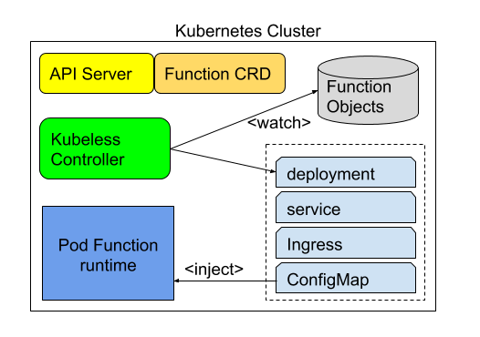
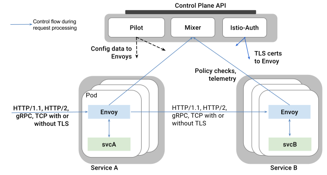
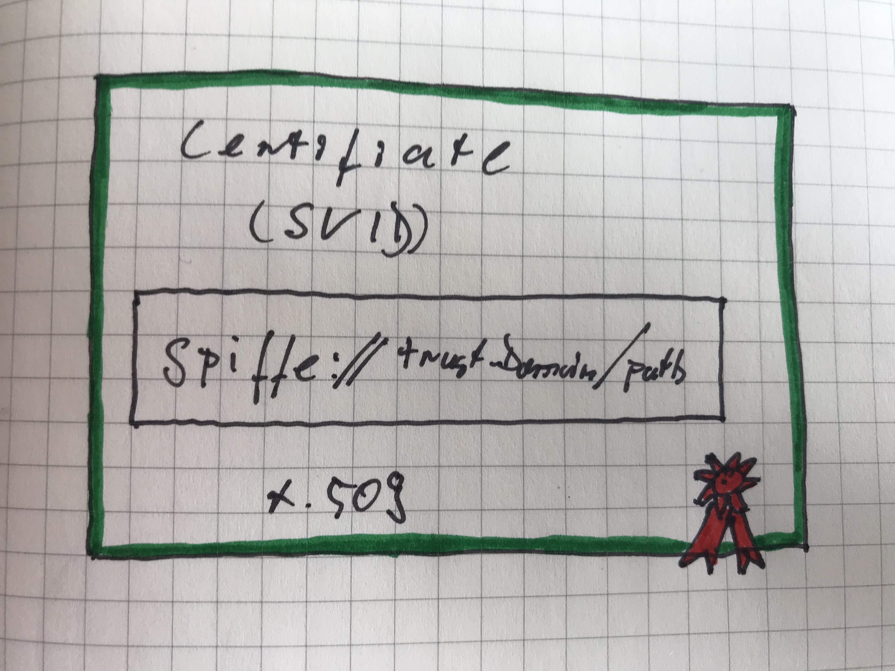
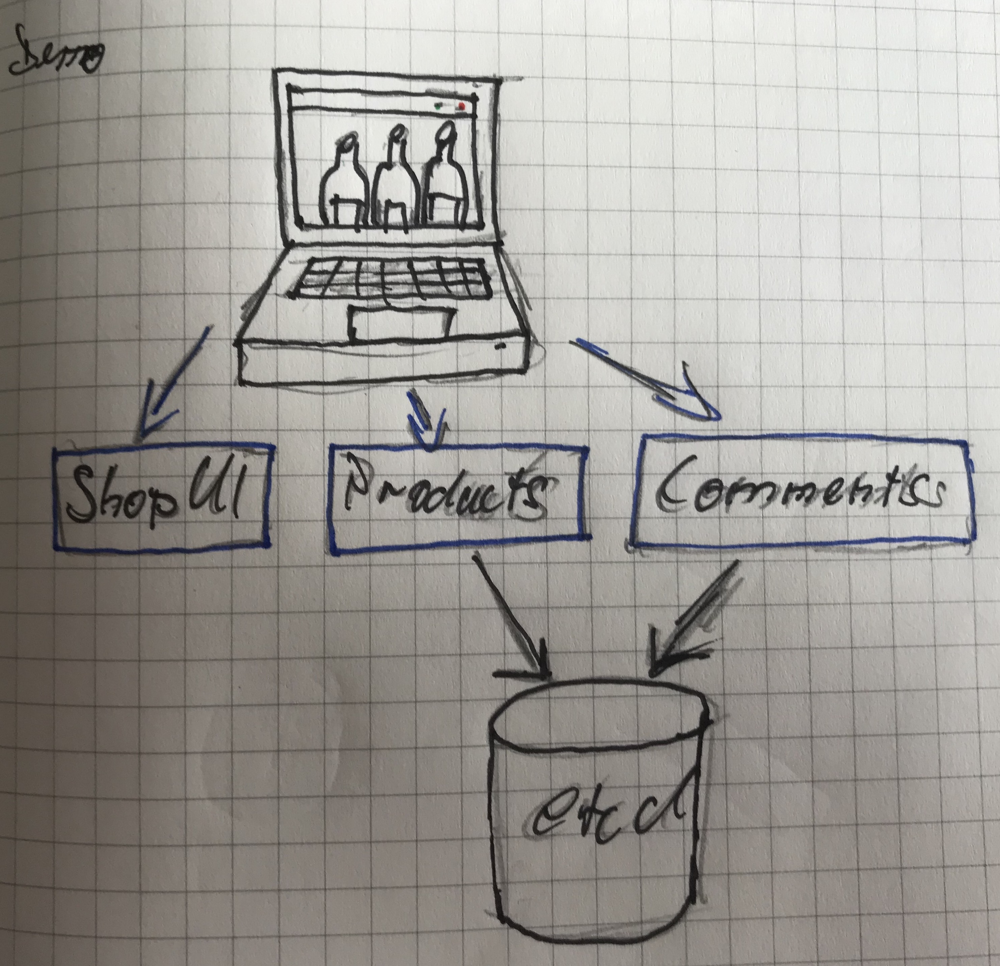
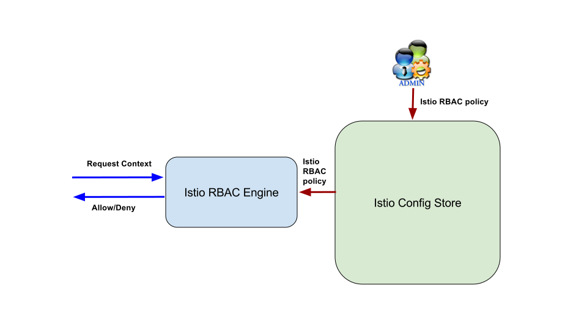

Secure Serverless Functions with Istio
Johannes Engelke, 2018Kubeless
Istio Overview
Sidecar
Istio Security
- Identity: SPIFFE
- Communication Security: Mutual TLS
- Keymanagement: Per-Cluster CA
SPIFFE
The Secure Production Identity Framework For Everyone (SPIFFE) standard provides a specification for a framework capable of bootstrapping and issuing identity to services across heterogeneous environments and organizational boundaries.https://spiffe.io/spiffe/
Spiffe Verifiable Identity Document (SVID)
Communication Security
- Local connections between service and Envoy
- Mutual TLS connections between Envoys
- Validating Access Rules
Keymanagement
- Generate a SPIFFE key and certificate pair
- Distribute a key and certificate pair
- Rotate keys and certificates
- Revoke a specific key and certificate
Istio Security

Demo Architecture
Demo MutualTLS
Istio Ingress
JWT Authentication
JWT Demo
Istio RBAC
RBAC Demo
Conclusion
- Istio is super interesting
- Istio is not production ready
- Istio docs are awesome
- Kubeless is boring
Thank you
@quablabjohannes.engelke@sap.com
github.com/joek
joek.github.io/kubeless-istio/